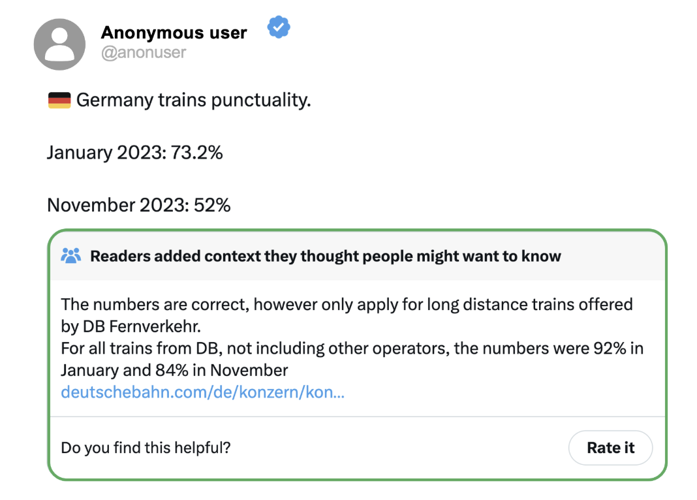
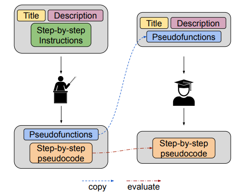
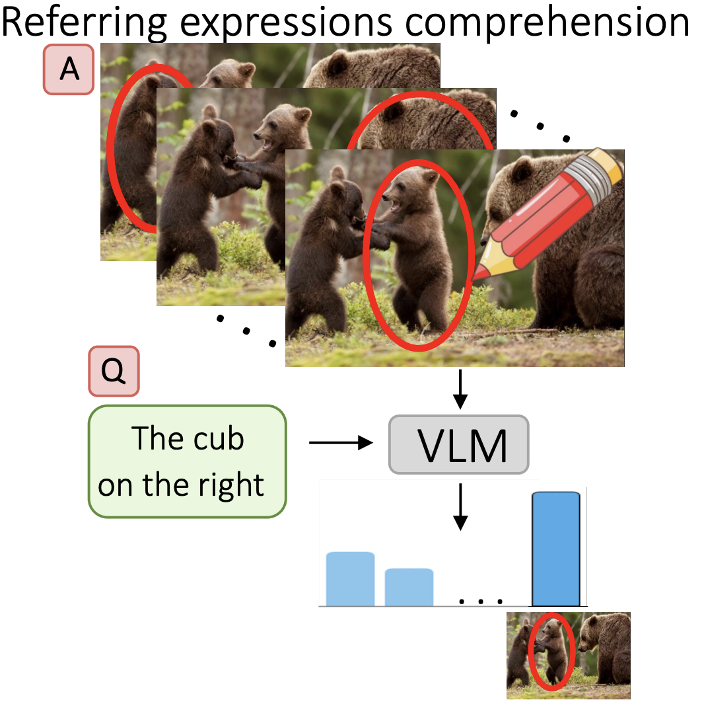
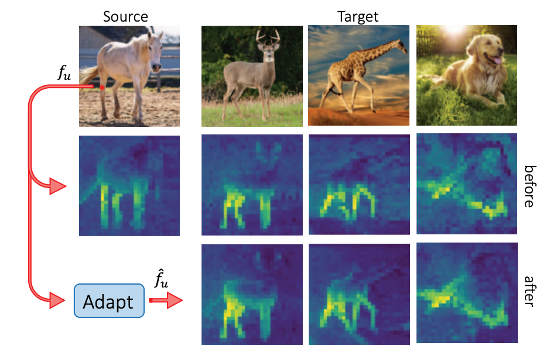
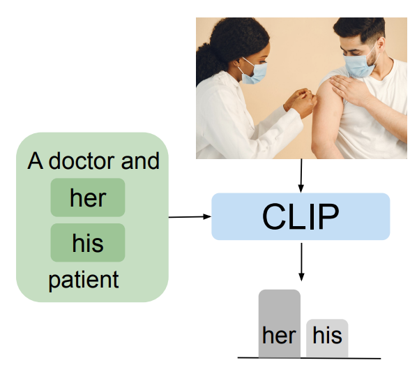
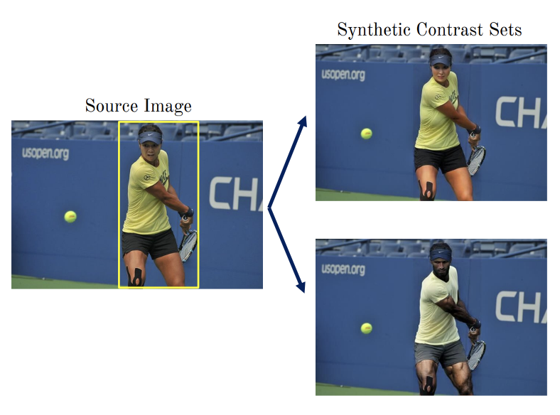
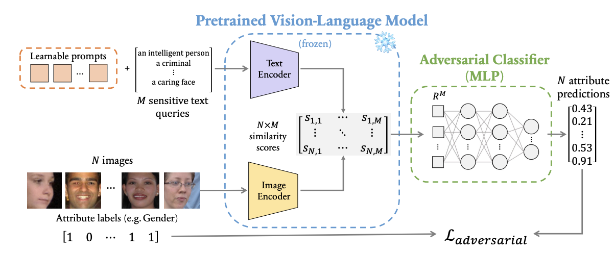
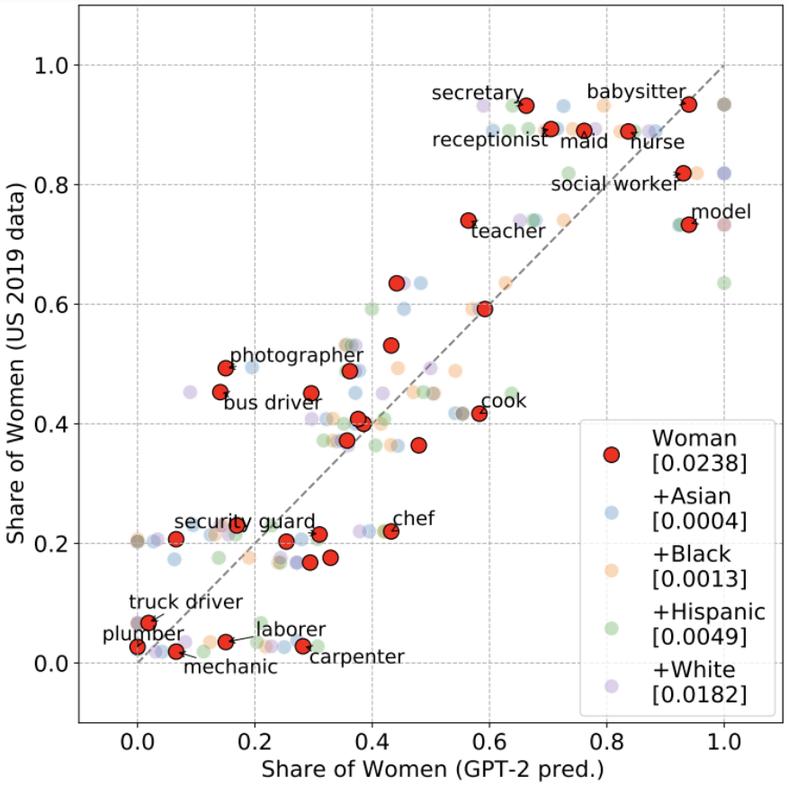

|
Research
I'm interested in vision + language, un/self-supervised computer vision, 3D, and fairness.
|
|

|
HelloFresh: LLM Evaluations on Streams of Real-World Human Editorial Actions across X Community Notes and Wikipedia edits
Tim Franzmeyer*,
Aleksandar Shtedritski*,
Samuel Albanie,
Philip Torr,
Joao F. Henriques,
Jakob E. Foerster,
ACL, 2024
arXiv /
website /
code
A living benchmark for LLMs that addresses issues like test data contamination and benchmark overfitting.
|
|

|
BioPlanner: Automatic Evaluation of LLMs on Protocol Planning in Biology
Odhran O'Donoghue,
Aleksandar Shtedritski,
John Ginger,
Ralph Abboud,
Ali Essa Ghareeb,
Justin Booth,
Samuel G Rodriques
EMNLP, 2023
arXiv /
code
A framework for evaluation of LLMs on long planning tasks, with an application in biology.
|
|

|
What does CLIP know about a red circle? Visual prompt engineering for VLMs
Aleksandar Shtedritski,
Christian Rupprecht,
Andrea Vedaldi
ICCV, 2023 (Oral Presentation)
arXiv /
code
We discover an emergent ability of CLIP, where drawing a red circle focuses the global image description to the region inside the circle.
|
|

|
Learning Universal Semantic Correspondences with No Supervision and Automatic Data Curation
Aleksandar Shtedritski,
Andrea Vedaldi,
Christian Rupprecht
ICCV Workshop ion Representation Learning with Limited Data, 2023 (Oral Presentation)
paper /
We present a method for learning robust and generalizable semantic correspondences.
|
|

|
VisoGender: A dataset for benchmarking gender bias in image-text pronoun resolution
Siobhan Mackenzie Hall,
Fernanda Gonçalves Abrantes,
Hanwen Zhu,
Grace Sodunke,
Aleksandar Shtedritski,
Hannah Rose Kirk
NeurIPS Datasets and Benchmarks, 2023
arXiv /
code
A new dataset for benchmarking gender bias in vision-language models.
|
|

|
Balancing the Picture: Debiasing Vision-Language Datasets with Synthetic Contrast Sets
Brandon Smith,
Miguel Farinha,
Siobhan Mackenzie Hall,
Hannah Rose Kirk,
Aleksandar Shtedritski,
Max Bain
NeurIPS Workshop SyntheticData4ML, 2023
arXiv /
code
We demonstrate that the datasets used to evaluate the bias of VLMs are themselves biased. We propose to debias these datasets using synthetic contrast sets.
|
|

|
A prompt array keeps the bias away: Debiasing vision-language models with adversarial learning
Hugo Bergh,
Siobhan Mackenzie Hall,
Wonsuk Yang,
Yash Bhalgat,
Hannah Rose Kirk,
Aleksandar Shtedritski,
Max Bain
AACL-IJNCLP, 2022
arXiv /
code
We propose a lightweight method to debias CLIP.
|
|

|
Bias out-of-the-box: An empirical analysis of intersectional occupational biases in popular generative language models
Hannah Rose Kirk,
Yennie Jun,
Haider Iqbal,
Elias Benussi,
Frederic A. Dreyer,
Aleksandar Shtedritski,
Yuki M. Aasano
NeurIPS, 2021
arXiv /
code
An in-depth analysis of instersectional biases of GPT-2.
|
|
Services
Reviewer
CVPR 2023, 2024, ICCV 2023, ECCV 2024 NeurIPS 2023, 2024
Teaching Assistant
- Information Engineering tutorial classes, Engineering Department, University of Oxford, 2021-22
- Image and Signal Processing lab, Engineering Department, University of Oxford, 2022
- Machine Learning tutorial classes, Department of Computer Science, University of Oxford, 2020-21
- Machine Learning revision classes, Magdalen College, University of Oxford, 2020-21
- Control Systems lab, Engineering Department, University of Oxford, 2021
|
This website template is borrowed from Jon Barron. Thanks!
|
|
{kind=link}